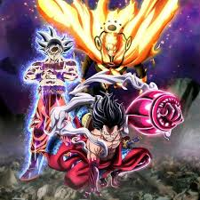

Como qualquer jogo de luta Arcade, esse não e diferente, Existe os classicos botões de Combat que São:
Ataques Basicos:
U= Ataque Basico /
I= Ataque forte /
O= Super Ataque /
J= Especial
Ataques Especiais:
Baixo + Frente + U /
Baixo + Frente + I /
Baixo + Frente + O /
Baixo + Atras + U /
Baixo + Atras + I /
Baixo + Atras + O